감정평가사-1차-2교시 (2017-03-04 기출문제)
1과목: 감정평가관계법규
1. 국토의 계획 및 이용에 관한 법령상 도시ㆍ군관리계획의 입안 등에 관한설명으로 옳지 않은 것은?
- 주민은 기반시설의 개량에 관한 사항에 대하여 도시ㆍ군관리계획의 입안을 제안할 수 있다.
- 도시ㆍ군관리계획의 입안을 제안받은 자는 제안자와 협의하여 제안된 도시ㆍ군관리계획의 입안 및 결정에 필요한 비용의 전부 또는 일부를 제안자에게 부담시킬 수 있다.
- 지구단위계획구역의 지정에 관한 사항에 대하여 도시ㆍ군관리계획의 입안을 제안하려는 자는 국ㆍ공유지를 제외한 대상토지면적의 3분의 2 이상의 토지소유자의 동의를 받아야 한다.
- 도시ㆍ군관리계획으로 입안하려는 지구단위계획구역이 상업지역에 위치하는 경우에는 재해취약성분석을 실시하여야 한다.
- 도시지역의 축소에 따른 지구단위계획구역의 변경에 대한 도시ㆍ군관리계획을 입안할 때에는 주민의 의견청취가 요구되지 아니한다.
(정답률: 알수없음)

2. 국토의 계획 및 이용에 관한 법령상 용도지구에 관한 설명으로 옳지 않은 것은?
- 용도지구는 토지의 이용 및 건축물의 용도 등에 대한 용도지역의 제한을 강화하거나 완화하여 적용함으로써 용도지역의 기능을 증진시키고 미관ㆍ경관ㆍ안전 등을 도모하기 위하여 지정한다.
- 용도지구의 지정 또는 변경은 도시ㆍ군관리계획으로 결정한다.
- 시설보호지구는 학교시설보호지구, 공용시설보호지구, 항만시설보호지구 및 공항시설보호지구로 세분된다.
- 개발제한구역안의 취락을 정비하기 위하여 필요한 지구는 자연취락지구이다.
- 주거기능, 공업기능, 유통ㆍ물류기능 및 관광ㆍ휴양기능 중 2 이상의 기능을 중심으로 개발ㆍ정비할 필요가 있는 경우 복합개발진흥지구로 지정한다.
(정답률: 알수없음)
3. 국토의 계획 및 이용에 관한 법령상 용도지역의 세분에 관한 내용으로 옳게 연결한 것은?
- 제2종전용주거지역 - 단독주택 중심의 양호한 주거환경을 보호하기 위하여 필요한 지역
- 보전녹지지역 - 주로 농업적 생산을 위하여 개발을 유보할 필요가 있는 지역
- 제3종일반주거지역 - 중고층주택을 중심으로 편리한 주거환경을 조성하기 위하여 필요한 지역
- 일반상업지역 - 도심ㆍ부도심의 상업기능 및 업무기능의 확충을 위하여 필요한 지역
- 전용공업지역 - 경공업 그 밖의 공업을 수용하되, 주거기능ㆍ상업기능 및 업무 기능의 보완이 필요한 지역
(정답률: 알수없음)
4. 국토의 계획 및 이용에 관한 법령상 '도시지역 및 지구단위계획구역외의 지역'에서 도시ㆍ군관리계획으로 결정하지 아니하여도 설치할 수 있는 기반시설에 해당하지 않는 것은?
- 궤도 및 전기공급설비
- 화장시설
- 주차장
- 자동차정류장
- 유류저장 및 송유설비
(정답률: 알수없음)
5. 국토의 계획 및 이용에 관한 법령상 용도구역에 관한 설명이다. 다음 ( )안에 알맞은 것은?
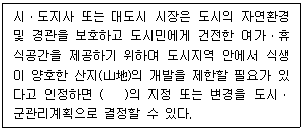
- 시가화조정구역
- 개발제한구역
- 수산자원보호구역
- 입지규제최소구역
- 도시자연공원구역
(정답률: 알수없음)
6. 국토의 계획 및 이용에 관한 법령상 기반시설의 종류와 그 해당시설의 연결로 옳지 않은 것은?
- 유통ㆍ공급시설 - 방송ㆍ통신시설
- 보건위생시설 - 수질오염방지시설
- 공공ㆍ문화체육시설 - 공공직업훈련시설
- 방재시설 - 유수지
- 공간시설 - 녹지
(정답률: 알수없음)
7. 국토의 계획 및 이용에 관한 법령상 지구단위계획구역에 관한 설명으로 옳지 않은 것은?
- 지구단위계획구역은 도시ㆍ군관리계획으로 결정한다.
- 용도지구로 지정된 지역에 대하여는 지구단위계획구역을 지정할 수 없다.
- 「도시 및 주거환경정비법」에 따라 지정된 정비구역의 일부에 대하여 지구단위계획구역을 지정할 수 있다.
- 도시지역 외 지구단위계획구역에서는 지구단위계획으로 당해 용도지역 또는 개발진흥지구에 적용되는 건폐율의 150퍼센트 이내에서 건폐율을 완화하여 적용할 수 있다.
- 도시지역 내 지구단위계획구역의 지정목적이 한옥마을을 보존하고자 하는 경우 지구단위계획으로「주차장법」에 의한 주차장 설치기준을 100퍼센트까지 완화하여 적용할 수 있다.
(정답률: 알수없음)
8. 국토의 계획 및 이용에 관한 법령상 공동구에 관한 설명으로 옳지 않은 것은?
- 200만제곱미터를 초과하는 택지개발지구에서 개발사업을 시행하는 자는 공동구를 설치하여야 한다.
- 공동구가 설치된 경우 가스관은 공동구협의회의 심의를 거쳐 공동구에 수용할 수 있다.
- 공동구의 설치에 필요한 비용은 공동구 점용예정자가 부담하되, 그 부담액은 사업시행자와 협의하여 정한다.
- 공동구의 효율적인 관리ㆍ운영을 위하여 필요하다고 인정하는 경우에는 지방공사 또는 지방공단에 그 관리ㆍ운영을 위탁할 수 있다.
- 공동구관리자는 공동구의 안전점검으로서 매년 1월 1일을 기준으로 6개월에 1회 이상 정기점검을 실시하여야 한다.
(정답률: 알수없음)
9. 국토의 계획 및 이용에 관한 법령상 입지규제최소구역 등에 관한 설명으로 옳지 않은 것은?
- 시ㆍ도지사는 도시ㆍ군기본계획에 따른 도심ㆍ부도심 또는 생활권의 중심지역을 입지규제최소구역으로 지정할 수 있다.
- 입지규제최소구역계획에는 입지규제최소구역의 지정 목적을 이루기 위하여 건축물의 건폐율ㆍ용적률ㆍ높이에 관한 사항이 포함되어야 한다.
- 입지규제최소구역계획은 도시ㆍ군관리계획으로 결정한다.
- 입지규제최소구역에 대하여는「주택법」제35조에 따른 대지조성기준을 적용하지 아니할 수 있다.
- 입지규제최소구역으로 지정된 지역은「건축법」에 따른 특별건축구역으로 지정된 것으로 본다.
(정답률: 알수없음)
10. 국토의 계획 및 이용에 관한 법령상 제3종일반주거지역 안에서 건축할 수 있는 건축물을 모두 고른 것은? (단, 조례는 고려하지 않음)
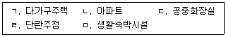
- ㄱ, ㄴ, ㄷ
- ㄱ, ㄴ, ㄹ
- ㄱ, ㄹ, ㅁ
- ㄴ, ㄷ, ㅁ
- ㄷ, ㄹ, ㅁ
(정답률: 알수없음)
11. 국토의 계획 및 이용에 관한 법령상 용도지역에서의 용적률의 최대한도가 큰 순서대로 나열된 것은? (단, 조례는 고려하지 않음)
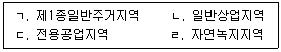
- ㄱ - ㄴ - ㄷ – ㄹ
- ㄴ - ㄱ - ㄷ – ㄹ
- ㄴ - ㄷ - ㄱ - ㄹ
- ㄷ - ㄱ - ㄴ – ㄹ
- ㄷ - ㄴ - ㄱ - ㄹ
(정답률: 알수없음)
12. 국토의 계획 및 이용에 관한 법령상 건축물을 건축하려는 자가 그 대지의 일부에 설치하여 국가 또는 지방자치단체에 기부채납하는 경우에 조례로 해당 용도 지역에 적용되는 용적률을 완화할 수 있는 시설에 해당하는 것은?
- 「청소년활동진흥법」에 따른 청소년수련관
- 「노인복지법」에 따른 노인복지관
- 「물류시설의 개발 및 운영에 관한 법률」에 따른 물류터미널
- 「여객자동차 운수사업법」에 따른 차고
- 「농수산물유통 및 가격안정에 관한 법률」에 따른 농수산물도매시장
(정답률: 알수없음)
13. 국토의 계획 및 이용에 관한 법령상 용도지역 미지정 지역의 건폐율의 최대 한도(%)는? (단, 조례는 고려하지 않음)
- 20
- 30
- 40
- 50
- 60
(정답률: 알수없음)
14. 감정평가 및 감정평가사에 관한 법령상 감정평가에 관한 설명으로 옳지 않은 것은?
- 감정평가업자는 해산하거나 폐업하는 경우 감정평가서의 원본과 그 관련 서류를 국토교통부장관에게 제출하여야 한다.
- 감정평가업자는 감정평가서의 관련 서류를 발급일로부터 5년 이상 보존하여야 한다.
- 감정평가 의뢰인이 감정평가서를 분실하거나 훼손하여 감정평가서 재발급을 신청한 경우 감정평가업자는 정당한 사유가 있을 때를 제외하고는 감정평가서를 재발급하여야 한다.
- 국가가 토지등을 경매하기 위하여 감정평가를 의뢰하려고 한국감정평가사협회에 감정평가업자 추천을 요청한 경우 협회는 요청을 받은 날부터 7일 이내에 감정평가업자를 추천하여야 한다.
- 유가증권도 감정평가의 대상이 된다.
(정답률: 알수없음)
15. 감정평가 및 감정평가사에 관한 법령상 감정평가사의 권리와 의무에 관한 설명으로 옳지 않은 것은?
- 감정평가사는 2명 이상의 감정평가사로 구성된 합동사무소를 설치할 수 있다.
- 감정평가사가 감정평가업을 하려는 경우에는 감정평가사무소 개설에 대하여 국토교통부장관의 인가를 받아야 한다.
- 감정평가사는 감정평가업을 하기 위하여 1개의 사무소만을 설치할 수 있다.
- 감정평가업자는 토지등의 매매업을 직접 하여서는 아니 된다.
- 감정평가업자가 손해배상책임을 보장하기 위하여 보증보험에 가입하는 경우 보험가입 금액은 감정평가사 1인당 1억원 이상으로 한다.
(정답률: 알수없음)
16. 감정평가 및 감정평가사에 관한 법령상 감정평가사에 대한 징계의 종류에 해당하지 않는 것은?
- 자격의 취소
- 등록의 취소
- 경고
- 2년 이하의 업무정지
- 견책
(정답률: 알수없음)
17. 부동산 가격공시에 관한 법령상 표준지공시지가의 효력에 해당하는 것을 모두 고른 것은?
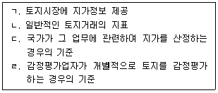
- ㄱ, ㄷ
- ㄴ, ㄹ
- ㄱ, ㄴ, ㄷ
- ㄴ, ㄷ, ㄹ
- ㄱ, ㄴ, ㄷ, ㄹ
(정답률: 알수없음)
18. 부동산 가격공시에 관한 법령상 표준주택가격의 공시 등에 관한 설명으로 옳지 않은 것은?
- 국토교통부장관은 표준주택가격을 조사ㆍ산정하고자 할 때에는 한국감정원에 의뢰한다.
- 표준주택가격은 국토교통부장관이 중앙부동산가격공시위원회의 심의를 거쳐 공시하여야 한다.
- 표준주택의 대지면적 및 형상은 표준주택가격의 공시에 포함되어야 한다.
- 국토교통부장관이 표준주택가격을 조사ㆍ산정하는 경우에는 인근 유사 단독주택의 거래가격ㆍ임대료 등을 종합적으로 참작하여야 한다.
- 국토교통부장관은 개별주택가격의 산정을 위하여 필요하다고 인정하는 경우에는 주택가격비준표를 작성하여 시ㆍ도지사 또는 대도시 시장에게 제공하여야 한다.
(정답률: 알수없음)
19. 부동산 가격공시에 관한 법령상 표준지공시지가에 관한 설명으로 옳지 않은 것은?
- 표준지에 정착물이 있을 때에는 그 정착물이 존재하지 아니하는 것으로 보고 표준지공시지가를 평가하여야 한다.
- 표준지공시지가에 이의가 있는 자는 그 공시일부터 30일 이내에 서면으로 국토교통부장관에게 이의를 신청할 수 있다.
- 국토교통부장관은 이의신청 기간이 만료된 날부터 30일 이내에 이의신청을 심사하여 그 결과를 신청인에게 서면으로 통지하여야 한다.
- 표준지에 지상권이 설정되어 있을 때에는 그 권리의 가액을 반영하여 표준지 공시지가를 평가하여야 한다.
- 선정기준일부터 직전 1년간 과태료처분을 3회 이상 받은 감정평가업자는 표준지 공시지가 조사ㆍ평가의 의뢰 대상에서 제외된다.
(정답률: 알수없음)
20. 국유재산법령상 행정재산에 관한 설명으로 옳지 않은 것은?
- 중앙관서의 장은 행정재산을 효율적으로 관리하기 위하여 필요하면 국가기관 외의 자에게 그 재산의 관리를 위탁할 수 있다.
- 행정재산을 사용허가하려는 경우 수의(隨意)의 방법으로는 사용허가를 받을 자를 결정할 수 없다.
- 행정재산의 관리위탁을 받은 자는 미리 해당 중앙관서의 장의 승인을 받아 위탁받은 재산의 일부를 다른 사람에게 사용ㆍ수익하게 할 수 있다.
- 중앙관서의 장은 건물 등을 신축하여 기부채납을 하려는 자가 신축기간에 그 부지를 사용하는 경우 그 사용료를 면제할 수 있다.
- 중앙관서의 장은 행정재산의 사용허가를 철회하려는 경우에는 청문을 하여야 한다.
(정답률: 알수없음)
21. 국유재산법령상 일반재산의 대부에 관한 설명으로 옳은 것은?
- 일반재산은 대부는 할 수 있으나 처분은 할 수 없다.
- 영구시설물의 축조를 목적으로 하는 토지와 그 정착물의 대부기간은 50년이 넘도록 정할 수 있다.
- 대부기간이 끝난 일반재산에 대하여 종전의 대부계약을 갱신할 수 있는 경우에도 수의계약의 방법으로 대부할 수 있는 경우에는 1회만 갱신할 수 있다.
- 중앙관서의 장등은 연간 대부료의 일부를 대부보증금으로 환산하여 받아야 한다.
- 일반재산을 주거용으로 대부계약을 하는 경우에는 수의(隨意)의 방법으로 대부계약의 상대방을 결정할 수 있다.
(정답률: 알수없음)
22. 국유재산법령상 일반재산의 처분가격에 관한 설명으로 옳은 것은?
- 지식재산을 처분할 때의 예정가격은 두 개의 감정평가업자의 평가액을 산술평균한 금액으로 한다.
- 상장법인이 발행한 주권을 처분할 때의 예정가격은 하나의 감정평가업자의 평가액으로 한다.
- 비상장법인이 발행한 지분증권을 처분할 때의 예정가격은 두 개의 감정평가업자의 평가액을 산술평균한 금액으로 한다.
- 대장가격이 3천만원인 부동산을 공공기관에 처분할 때의 예정가격은 하나의 감정평가업자의 평가액으로 결정한다.
- 증권을 제외한 일반재산을 처분할 때의 예정가격에 대한 감정평가업자의 평가액은 평가일부터 3년 이내에만 적용할 수 있다.
(정답률: 알수없음)
23. 국유재산법령상 행정재산의 사용허가의 취소ㆍ철회사유에 해당하지 않는 것은?
- 해당 재산의 보존을 게을리한 경우
- 부실한 증명서류를 제시하여 사용허가를 받은 경우
- 중앙관서의 장이 사용허가 외의 방법으로 해당 재산을 관리ㆍ처분할 필요가 있다고 인정되는 경우
- 납부기한까지 사용료를 납부하지 않은 경우
- 중앙관서의 장의 승인 없이 사용허가를 받은 재산의 원래 상태를 변경한 경우
(정답률: 알수없음)
24. 건축법령상 건축허가 등에 관한 설명으로 옳지 않은 것은?
- 광역시에 연면적의 합계가 20만제곱미터인 공장을 건축하려면 광역시장의 허가를 받아야 한다.
- 허가권자는 숙박시설에 해당하는 건축물의 용도가 교육환경 등 주변 환경을 고려할 때 부적합하다고 인정되는 경우에는 건축위원회의 심의를 거쳐 해당 건축허가를 하지 아니할 수 있다.
- 건축허가를 받으면「도로법」에 따른 도로의 점용 허가를 받은 것으로 본다.
- 건축 관련 입지와 규모에 대한 사전결정을 신청한 자는 사전결정을 통지받은 날부터 2년 이내에 건축허가를 신청하여야 한다.
- 건축허가를 받은 후 건축주를 변경하는 경우에는 신고하여야 한다.
(정답률: 알수없음)
25. 건축법령상 건축물의 대지와 도로에 관한 설명으로 옳지 않은 것은? (단, 건축법상 적용제외 규정 및 건축협정에 따른 특례는 고려하지 않음)
- 건축물의 주변에 허가권자가 인정한 유원지가 있는 경우에는 건축물의 대지가 자동차전용도로가 아닌 도로에 2미터 이상 접할 것이 요구되지 아니 한다.
- 연면적의 합계가 3천제곱미터인 작물 재배사의 대지는 너비 6미터 이상의 도로에 4 미터 이상 접할 것이 요구되지 아니 한다.
- 주민이 오랫동안 통행로로 이용하고 있는 사실상의 통로로서 해당 지방자치단체의 조례로 정하는 것인 경우의「건축법」상 도로는 이해관계인의 동의를 받지 아니하고 건축위원회의 심의를 거쳐 그 도로를 폐지할 수 있다.
- 면적 5천 제곱미터 미만인 대지에 공장을 건축하는 건축주는 대지에 조경 등의 조치를 하지 아니할 수 있다.
- 도로면으로부터 높이 4.5미터 이하에 있는 창문은 열고 닫을 때 건축선의 수직면을 넘지 아니하는 구조로 하여야 한다.
(정답률: 알수없음)
26. 건축법령상 공개공지등의 확보에 관한 설명으로 옳지 않은 것은?
- 상업지역에서 업무시설로서 해당 용도로 쓰는 바닥면적의 합계가 5천 제곱미터 이상인 건축물의 대지에는 공개공지등을 확보하여야 한다.
- 공개 공지는 필로티의 구조로 설치할 수 있다.
- 공개공지등에는 물건을 쌓아 놓거나 출입을 차단하는 시설을 설치하지 아니하여야 한다.
- 공개공지등의 면적은 건축면적의 100분의 10 이하로 한다.
- 공개공지등을 설치하는 경우에는 건축물의 용적률 기준을 완화하여 적용할 수 있다.
(정답률: 알수없음)
27. 건축법령상 허가 대상 건축물이라 하더라도 건축신고를 하면 건축허가를 받은 것으로 보는 경우를 모두 고른 것은?
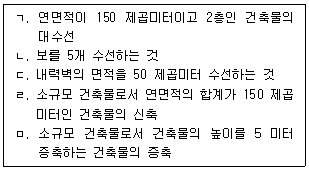
- ㄱ, ㄴ, ㄷ
- ㄱ, ㄷ, ㄹ
- ㄱ, ㄹ, ㅁ
- ㄴ, ㄷ, ㄹ
- ㄴ, ㄷ, ㄹ, ㅁ
(정답률: 알수없음)
28. 공간정보의 구축 및 관리 등에 관한 법령상 지목이 대(垈)에 해당하는 것은?
- 일반 공중의 종교의식을 위하여 법요를 하기 위한 사찰의 부지
- 고속도로의 휴게소 부지
- 영구적 건축물 중 미술관의 부지
- 학교의 교사(校舍) 부지
- 물건 등을 보관하거나 저장하기 위하여 독립적으로 설치된 보관시설물의 부지
(정답률: 알수없음)
29. 공간정보의 구축 및 관리 등에 관한 법령상 용어에 관한 설명으로 옳지 않은 것은?
- 지적측량은 지적확정측량 및 지적재조사측량을 포함한다.
- 필지를 구획하는 선의 굴곡점으로서 지적도에 도해(圖解) 형태로 등록하는 점은 경계점에 해당한다.
- 지적공부는 지적측량 등을 통하여 조사된 토지의 표시와 해당 토지의 소유자 등을 기록한 대장 및 도면을 말한다.
- 축척변경은 지적도에 등록된 경계점의 정밀도를 높이기 위하여 작은 축척을 큰 축척으로 변경하여 등록하는 것을 말한다.
- 등록전환은 토지대장 및 지적도에 등록된 임야를 임야대장 및 임야도에 옮겨 등록하는 것을 말한다.
(정답률: 알수없음)
30. 공간정보의 구축 및 관리 등에 관한 법령상 토지의 이동 신청 및 지적정리 등에 관한 설명으로 옳은 것은?
- 토지소유자는 신규등록할 토지가 있으면 그 사유가 발생한 날부터 60일 이내에 지적소관청에 신규등록을 신청하여야 한다.
- 합병하려는 토지의 소유자가 서로 다른 경우에는 합병에 합의한 날로부터 90일 이내에 지적소관청에 합병을 신청하여야 한다.
- 지적소관청은 바다로 된 토지의 등록말소 신청을 하도록 통지받은 토지소유자가 그 통지를 받은 날로부터 60일 이내에 등록말소 신청을 하지 아니하면 등록을 말소한다.
- 지적소관청은 축척변경을 하려면 축척변경 시행지역의 토지소유자 과반수의 동의를 받아야 한다.
- 지적소관청은 합병하려는 토지가 축척이 다른 지적도에 각각 등록되어 있어 축척변경을 하는 경우에는 시ㆍ도지사의 승인을 받아야 한다.
(정답률: 알수없음)
31. 공간정보의 구축 및 관리 등에 관한 법령상 토지의 등록에 관한 설명으로 옳지 않은 것은?
- 국토교통부장관은 모든 토지에 대하여 필지별로 소재ㆍ지번ㆍ지목ㆍ면적ㆍ경계 또는 좌표 등을 조사ㆍ측량하여 지적공부에 등록하여야 한다.
- 지번은 지적소관청이 지번부여지역별로 차례대로 부여한다.
- 지적공부에 등록하는 경계 또는 좌표는 토지의 이동이 있을 때 토지소유자의 신청이 없는 경우 지적소관청이 직권으로 조사ㆍ측량하여 결정할 수는 없다.
- 물을 상시적으로 이용하지 않고 약초를 주로 재배하는 토지의 지목은 전(田)이다.
- 지목은 필지마다 하나의 지목을 설정하여야 한다.
(정답률: 알수없음)
32. 부동산등기법령상 등기의 순위와 접수 등에 관한 설명으로 옳지 않은 것은?
- 같은 부동산에 관하여 등기한 권리의 순위는 법률에 다른 규정이 없으면 등기한 순서에 따른다.
- 등기의 순서는 등기기록 중 같은 구(區)에서 한 등기 상호간에는 순위번호에 따른다.
- 같은 주등기에 관한 부기등기 상호간의 순위는 그 등기 순서에 따른다.
- 등기신청은 대법원규칙으로 정하는 등기신청정보가 전산정보처리조직에 저장된 때 접수된 것으로 본다.
- 등기관이 등기를 마쳤을 때에는 신청인에게 그 사실을 알려야 하며, 신청인이 등기완료의 통지를 받은 때부터 그 등기의 효력이 발생한다.
(정답률: 알수없음)
33. 부동산등기법령상 등기부 등에 관한 설명으로 옳지 않은 것은?
- 등기부는 영구히 보존하여야 한다.
- 법관이 발부한 영장에 의하여 신청서나 그 밖의 부속서류를 압수하는 경우에는 이를 등기소 밖으로 옮길 수 있다.
- 1동의 건물을 구분한 건물에 있어서는 1동의 건물에 속하는 전부에 대하여 1개의 등기기록을 사용한다.
- 등기기록의 부속서류에 대하여는 이해관계 있는 부분만 열람을 청구할 수 있다.
- 등기관의 중복등기기록 정리는 실체의 권리관계에 영향을 미친다.
(정답률: 알수없음)
34. 부동산등기법령상 용익권 및 담보권에 관한 등기에 대한 설명으로 옳은 것은?
- 등기관이 지상권설정의 등기를 할 때 지상권의 범위는 등기원인에 그 약정이 있는 경우에만 기록한다.
- 등기관이 근저당권설정의 등기를 할 때 채권의 최고액은 등기원인에 그 약정이 있는 경우에만 기록한다.
- 등기관이 전세권설정의 등기를 할 때 위약금 또는 배상금은 등기원인에 그 약정이 있는 경우에만 기록한다.
- 등기관이 전세금반환채권의 일부 양도를 원인으로 한 전세권 일부이전등기를 할 때 양도액은 기록하지 않는다.
- 등기관이 동일한 채권에 관하여 여러 개의 부동산에 관한 권리를 목적으로 하는 저당권설정의 등기를 할 경우, 부동산이 3개 이상일 때에는 공동담보목록을 작성하여야 한다.
(정답률: 알수없음)
35. 부동산등기법령상 '이의'에 관한 설명으로 옳은 것을 모두 고른 것은?
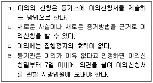
- ㄱ, ㄴ
- ㄱ, ㄷ
- ㄴ, ㄷ
- ㄴ, ㄹ
- ㄷ, ㄹ
(정답률: 알수없음)
36. 동산ㆍ채권 등의 담보에 관한 법령상 채권담보권에 관한 설명으로 옳지 않은 것은?
- 법인 등이 담보약정에 따라 금전의 지급을 목적으로 하는 지명채권을 담보로 제공하는 경우에는 담보등기를 할 수 있다.
- 채무자가 특정되지 아니한 여러 개의 채권이더라도 채권의 종류, 발생 원인, 발생 연월일을 정하는 등의 방법으로 특정할 수 있는 경우에는 이를 목적으로 하여 담보등기를 할 수 있다.
- 채권담보권의 목적이 된 채권이 피담보채권보다 먼저 변제기에 이른 경우에는 담보권자는 제3채무자에게 그 변제금액의 공탁을 청구할 수 있다.
- 담보권자는「민사집행법」에서 정한 집행방법으로는 채권담보권을 실행할 수 없다.
- 담보권자는 피담보채권의 한도에서 채권담보권의 목적이 된 채권을 직접 청구할 수 있다.
(정답률: 알수없음)
37. 도시 및 주거환경정비법령상 조합을 설립하는 경우 토지등소유자의 동의자수 산정방법으로 옳지 않은 것은?
- 주택재건축사업의 경우 1명이 둘 이상의 소유권을 소유하고 있는 경우에는 소유권의 수에 관계없이 토지등소유자를 1명으로 산정한다.
- 주택재개발사업의 경우 하나의 건축물이 수인의 공유에 속하는 때에는 그 수인을 대표하는 1인을 토지등소유자로 산정한다.
- 국ㆍ공유지에 대해서는 그 재산관리청을 토지등소유자로 산정한다.
- 주택재개발사업의 경우 토지에 지상권이 설정되어 있는 경우에는 토지의 소유자와 해당 토지의 지상권자를 대표하는 1인을 토지등소유자로 산정한다.
- 도시환경정비사업의 경우 토지등소유자가 정비구역 지정 후에 정비사업을 목적으로 토지를 추가로 취득하여 1인이 다수 필지의 토지를 소유하게 된 경우에는 필지의 수에 관계없이 토지등소유자를 1인으로 산정한다.
(정답률: 알수없음)
38. 도시 및 주거환경정비법령상 관리처분계획에 관한 설명으로 옳은 것은?
- 주택재건축사업에서 주택분양에 관한 권리를 포기하는 토지등소유자에 대한 임대주택의 공급에 따라 관리처분계획을 변경하는 때에는 시장ㆍ군수에게 신고하여야 한다.
- 주택재개발사업에서 관리처분계획은 주택단지의 경우 1개의 건축물의 대지는 1필지의 토지가 되도록 정하여야 한다.
- 주택재건축사업의 관리처분계획에서 분양대상자별 분양예정인 건축물의 추산액을 평가할 때에는 시장ㆍ군수가 선정ㆍ계약한 2인 이상의 감정평가업자가 평가한 금액을 산술평균하여 산정한다.
- 주택재개발사업에서 지방자치단체인 토지등소유자에게는 하나 이상의 주택 또는토지를 소유한 경우라도 1주택을 공급하도록 관리처분계획을 정한다.
- 주거환경관리사업의 사업시행자는 관리처분계획을 수립하여 시장ㆍ군수의 인가를 받아야 한다.
(정답률: 알수없음)
39. 도시 및 주거환경정비법령상 도시ㆍ주거환경정비기본계획에 포함되어야 하는 사항에 해당하지 않는 것은?
- 도시 및 주거환경 정비를 위한 국가 정책방향
- 정비사업의 기본방향
- 녹지ㆍ조경 등에 관한 환경계획
- 도시의 광역적 재정비를 위한 기본방향
- 건폐율ㆍ용적률 등에 관한 건축물의 밀도계획
(정답률: 알수없음)
40. 도시 및 주거환경정비법령상 정비사업 중 정비계획 수립 및 정비구역 지정의 대상이 되지 않는 것은?
- 주거환경개선사업
- 주택재개발사업
- 도시환경정비사업
- 가로주택정비사업
- 주거환경관리사업
(정답률: 알수없음)
2과목: 회계학
41. 유형자산의 교환거래시 취득원가에 관한 설명으로 옳지 않은 것은?
- 교환거래의 상업적 실질이 결여된 경우에는 제공한 자산의 장부금액을 취득원가로 인식한다.
- 취득한 자산과 제공한 자산의 공정가치를 모두 신뢰성 있게 측정할 수 없는 경우에는 취득한 자산의 장부금액을 취득원가로 인식한다.
- 유형자산을 다른 비화폐성자산과 교환하여 취득하는 경우 제공한 자산의 공정가치를 신뢰성 있게 측정할 수 있다면 취득한 자산의 공정가치가 더 명백한 경우를 제외하고는 취득원가는 제공한 자산의 공정가치로 측정한다.
- 취득한 자산의 공정가치가 제공한 자산의 공정가치보다 더 명백하다면 취득한 자산의 공정가치를 취득원가로 한다.
- 제공한 자산의 공정가치를 취득원가로 인식하는 경우 현금을 수령하였다면 이를 취득원가에서 차감하고, 현금을 지급하였다면 취득원가에 가산한다.
(정답률: 알수없음)
42. 수익인식에 관한 설명으로 옳지 않은 것은?
- 재화의 결함에 대하여 정상적인 품질보증범위를 초과하여 판매자가 책임을 지더라도 재화가 구매자에게 인도되었다면 수익으로 인식한다.
- 설치조건부 판매에서 계약의 중요한 부분을 차지하는 설치가 아직 완료되지 않은 경우에는 당해 거래를 판매로 보지 아니하며, 수익을 인식하지 아니한다.
- 위탁판매의 경우 위탁자는 수탁자가 제3자에게 재화를 판매한 시점에 수익을 인식한다.
- 주문형 소프트웨어의 개발수수료는 진행기준에 따라 수익을 인식한다.
- 판매대금의 회수가 구매자의 재판매에 의해 결정되는 경우에는 당해 거래를 판매로 보지 아니하며, 수익을 인식하지 아니한다.
(정답률: 알수없음)
43. (주)감평은 20x1년 4월 1일에 거래처에 상품을 판매하고 그 대가로 이자부 약속어음(3개월 만기, 표시이자율 연 5%, 액면금액 ￦300,000)을 수취하였다. 동 어음을 1개월 보유하다가 주거래은행에서 연 8% 이자율로 할인할 경우, 어음할인액과 금융자산처분손실은? (단, 어음할인은 금융자산 제거요건을 충족함)
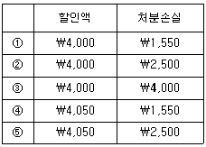
- ①
- ②
- ③
- ④
- ⑤
(정답률: 알수없음)
44. (주)감평은 (주)리스가 20x1년 1월 1일에 취득한 기계장치(공정가치 ￦390,000)에 대하여 금융리스계약(리스기간 3년, 연간리스료 ￦150,000 매년 말 지급, ㈜감평이 지급한 리스개설직접원가 ￦7,648)을 20x1년 1월 1일에 체결하고 즉시 사용하였다. 리스기간 종료시 예상잔존가치 ￦50,000 중 ￦20,000을 (주)감평이 보증하기로 하였다. 동 금융리스에 적용되는 내재이자율이 연 12%라면, (주)감평이 20x1년도에 인식할 감가상각비는? (단, 리스자산은 정액법으로 감가상각한다.)
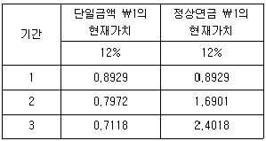
- ￦102,432
- ￦108,168
- ￦110,718
- ￦118,168
- ￦120,718
(정답률: 알수없음)
45. 보고기간후사건에 관한 설명으로 옳지 않은 것은?
- 보고기간 후부터 재무제표 발행승인일 전 사이에 배당을 선언한 경우에는 보고 기간말에 부채로 인식한다.
- 보고기간말 이전에 구입한 자산의 취득원가나 매각한 자산의 대가를 보고기간 후에 결정하는 경우는 수정을 요하는 보고기간후사건이다.
- 보고기간말과 재무제표 발행승인일 사이에 투자자산의 공정가치의 하락은 수정을 요하지 않는 보고기간후사건이다.
- 보고기간 후에 발생한 화재로 인한 주요 생산 설비의 파손은 수정을 요하지 않는 보고기간후사건이다.
- 경영진이 보고기간 후에, 기업을 청산하거나 경영활동을 중단할 의도를 가지고 있다고 판단하는 경우에는 계속기업의 기준에 따라 재무제표를 작성해서는 아니 된다.
(정답률: 알수없음)
46. (주)감평은 20x1년부터 20x3년까지 배당가능이익의 부족으로 배당금을 지급하지 못하였으나, 20x4년도에는 영업의 호전으로 ￦220,000을 현금배당 할 계획이다. (주)감평의 20x4년 12월 31일 발행주식수가 보통주 200주(주당 액면금액 ￦3,000, 배당률 4%)와 우선주 100주(비누적적, 완전참가적 우선주, 주당 액면금액 ￦2,000, 배당률 7%)인 경우, 보통주배당금으로 배분해야 할 금액은?
- ￦120,000
- ￦136,500
- ￦140,000
- ￦160,500
- ￦182,000
(정답률: 알수없음)
47. 20x1년 초 (주)감평은 정부보조금 ￦500,000을 받아 연구소 건물(내용연수 5년, 잔존가치 ￦0, 정액법 상각)을 ￦1,000,000에 취득하고 다음과 같이 회계처리를 하였다.
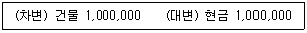
위 거래와 관련하여 정부보조금 및 감가상각에 대한 회계처리가 누락되었다. 이를 장부마감 이전에 반영하여 재무제표에 표시할 경우, 20x1년 말 재무제표에 미치는 영향으로 옳은 것은? (단, 정부보조금은 자산에서 차감하는 방법으로 회계처리한다.)
- 20x1년말 총자산금액에는 영향이 없음
- 20x1년도 당기순이익은 ￦100,000 감소
- 20x1년말 총부채 금액은 ￦400,000 증가
- 20x1년말 감가상각누계액은 ￦200,000 감소
- 20x1년말 건물 장부금액은 ￦200,000 감소
(정답률: 알수없음)
48. 다음 20x1년 말 (주)감평의 자료에서 재무상태표에 표시될 충당부채 금액은? (단, 현재가치 계산은 고려하지 않는다.)
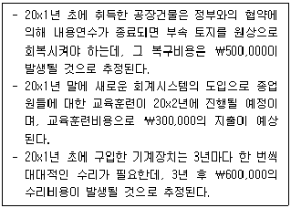
- ￦0
- ￦500,000
- ￦600,000
- ￦800,000
- ￦1,100,000
(정답률: 알수없음)
49. 다음은 (주)감평의 20x1년 현금흐름표 작성을 위한 자료이다.
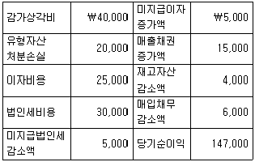
(주)감평은 간접법으로 현금흐름표를 작성하며, 이자지급 및 법인세납부를 영업활동으로 분류한다. 20x1년 (주)감평이 현금흐름표에 보고해야 할 영업활동 순현금흐름은?
- ￦160,000
- ￦165,000
- ￦190,000
- ￦195,000
- ￦215,000
(정답률: 알수없음)
50. (주)감평은 20x1년 1월 1일에 설립되었다. 20x1년도 (주)감평의 법인세비용 차감전순이익은 ￦1,000,000이며, 법인세율은 20%이고, 법인세와 관련된 세무조정사항은 다음과 같다.
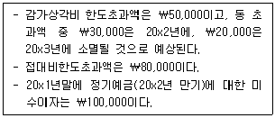
20x1년 중 법인세법의 개정으로 20x2년부터 적용되는 법인세율은 25%이며, 향후 (주)감평의 과세소득은 계속적으로 ￦1,000,000이 될 것으로 예상된다. (주)감평이 20x1년도 포괄손익계산서에 인식할 법인세비용과 20x1년말 재무상태표에 표시할 이연법인세자산(또는 부채)은? (단, 이연법인세자산과 이연법인세부채는 상계하여 표시한다.)
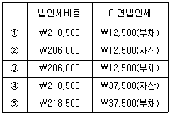
- ①
- ②
- ③
- ④
- ⑤
(정답률: 알수없음)
51. (주)감평은 20x1년 초에 도급금액 ￦1,000,000인 건설공사를 수주하고, 20x3년 말에 공사를 완공하였다. 이와 관련된 원가자료는 다음과 같다. (주)감평이 20x1년도 포괄손익계산서에 인식할 공사손익과 20x1년말 재무상태표에 표시할 미청구공사(또는 초과청구공사) 금액은? (단, 진행률은 발생누적계약원가를 추정총계약원가로 나눈 비율로 계산한다.)
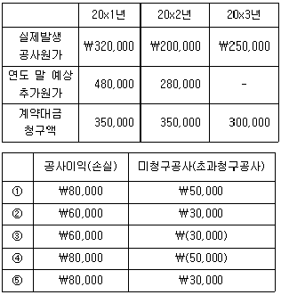
- ①
- ②
- ③
- ④
- ⑤
(정답률: 알수없음)
52. (주)대한은 20x1년 1월 1일에 건물을 ￦20,000,000에 취득하여 사용하고 있다(내용연수 5년, 잔존가치 ￦0, 정액법 상각). (주)대한은 20x2년 말에 재평가모형을 최초 적용하였으며, 장부금액과 감가상각누계액을 비례하여 수정하는 방법으로 회계처리하고 있다. 20x2년 말 건물의 재평가 전 장부금액은 ￦12,000,000이고, 공정가치는 ￦18,000,000이다. 다음 중 옳지 않은 것은? (단, 재평가잉여금은 이익잉여금으로 대체하지 않는다.)
- (주)대한은 20x2년에 감가상각비로 ￦4,000,000을 보고한다.
- 재평가 이후 (주)대한의 20x2년 말 재무상태표에 표시되는 건물의 장부금액은 ￦18,000,000이다.
- (주)대한은 20x2년 말에 재무상태표에 ￦6,000,000을 기타포괄손익누계액으로 인식한다.
- 자산재평가로 인한 장부금액 수정을 기존의 감가상각누계액을 제거하는 방법을 사용하면 건물의 장부금액 ￦18,000,000이 보고된다.
- (주)대한이 20x1년에도 이 건물에 대한 재평가를 실시하여 재평가손실 ￦1,000,000을 인식하였다면, 20x2년에는 ￦5,000,000을 당기이익으로 인식한다.
(정답률: 알수없음)
53. (주)감평이 본사 건물 취득시점부터 취득 후 2년간 지출은 다음과 같다. 동건물과 관련하여 (주)감평이 20x3년도 포괄손익계산서에 인식할 당기비용은? (단, 감가상각은 월할상각한다.)
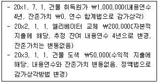
- ￦200,000
- ￦250,000
- ￦300,000
- ￦350,000
- ￦400,000
(정답률: 알수없음)
54. 상품매매기업인 (주)감평은 20x1년 1월 1일 특허권(내용연수 5년, 잔존가치 ￦0)과 상표권(비한정적 내용연수, 잔존가치 ￦0)을 각각 ￦100,000과 ￦200,000에 취득하였다. (주)감평은 무형자산에 대해 원가모형을 적용하며, 정액법에 의한 월할상각을 한다. 특허권과 상표권 회수가능액 자료가 다음과 같을 때, 20x2년도 포괄손익계산서에 인식할 당기비용은? (단, 20x2년 말 모든 무형자산의 회수가능액 감소는 손상징후에 해당된다.)
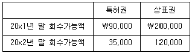
- ￦45,000
- ￦1⑤,000
- ￦120,000
- ￦125,000
- ￦145,000
(정답률: 알수없음)
55. (주)감평은 20x1년 1월 1일 토지와 토지 위에 있는 건물A를 일괄하여 ￦40,000에 취득(토지와 건물A의 공정가치 비율은 4:1)하였다. 취득당시 건물A의 잔여 내용연수는 5년이고 잔존가치는 없으며 정액법으로 감가상각한다. 20x2년 1월 1일 더 이상 건물A를 사용할 수 없어 철거하고 새로운 건물B의 신축을 시작하였다. 건물A의 철거비용은 ￦1,500이며, 철거시 수거한 고철 등을 매각하여 ￦500을 수령하였다. 건물신축과 관련하여 20x2년에 ￦20,000의 건설비가 발생하였으며, 건물B(내용연수 10년, 잔존가치 ￦0, 정액법 감가상각)는 20x2년 10월 1일 완공 후 즉시 사용하였다. 20x1년 12월 31일 건물A의 장부금액과 20x2년 12월 31일 건물B의 장부금액은? (단, 감가상각은 월할계산한다.)
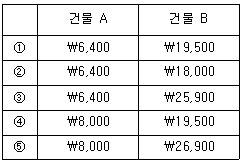
- ①
- ②
- ③
- ④
- ⑤
(정답률: 알수없음)
56. 자동차부품 제조업을 영위하고 하고 있는 (주)감평은 20x1년 초 임대수익 목적으로 건물(취득원가 ￦1,000,000, 잔여 내용연수 5년, 잔존가치 ￦0, 정액법 감가상각)을 취득하였다. 한편, 20x1년 말 동 건물의 공정가치는 ￦1,200,000이다. 다음 설명 중 옳지 않은 것은? (단, 해당 건물은 매각예정으로 분류되어 있지 않다.)
- 원가모형을 적용할 경우, 20x1년 감가상각비는 ￦200,000이다.
- 공정가치모형을 적용할 경우, 20x1년 감가상각비는 ￦200,000이다.
- 공정가치모형을 적용할 경우, 20x1년 평가이익은 ￦200,000이다.
- 공정가치모형을 적용할 경우, 20x1년 당기순이익은 ￦200,000만큼 증가한다.
- 공정가치모형을 적용할 경우, 20x1년 기타포괄손익에 미치는 영향은 ￦0이다.
(정답률: 알수없음)
57. 유형자산의 감가상각에 관한 설명으로 옳지 않은 것은?
- 건물이 위치한 토지의 가치가 증가할 경우 건물의 감가상각대상금액이 증가한다.
- 유형자산을 수선하고 유지하는 활동을 하더라도 감가상각의 필요성이 부인되는 것은 아니다.
- 유형자산의 사용정도에 따라 감가상각을 하는 경우에는 생산활동이 이루어지지 않을 때 감가상각액을 인식하지 않을 수 있다.
- 유형자산의 잔존가치는 해당 자산의 장부금액과 같거나 큰 금액으로 증가할 수도 있다.
- 유형자산의 공정가치가 장부금액을 초과하더라도 잔존가치가 장부금액을 초과하지 않는 한 감가상각액을 계속 인식한다.
(정답률: 알수없음)
58. 재무제표 표시에 관한 설명으로 옳은 것은?
- 비용을 기능별로 분류하는 것이 성격별 분리보다 더욱 목적적합한 정보를 제공하므로, 비용은 기능별로 분류한다.
- 재무상태표에 표시되는 자산과 부채는 반드시 유동자산과 비유동자산, 유동부채와 비유동부채로 구분하여 표시하여야 한다.
- 영업이익에 포함되지 않은 항목 중 기업의 영업성과를 반영하는 그 밖의 수익항목이 있다면 조정영업이익으로 포괄손익계산서 본문에 표시하여야 한다.
- 재무제표에는 중요하지 않아 구분하여 표시하지 않은 항목이라도 주석에서는 구분 표시해야 할 만큼 충분히 중요할 수 있다.
- 부적절한 회계정책은 이에 대하여 공시나 주석 또는 보충자료를 통해 설명할 수 있다면 정당화 될 수 있다.
(정답률: 알수없음)
59. (주)감평은 20x1년 1월 1일에 설립되었다. 다음 20x1년 자료를 이용하여 계산한 기말자산은?
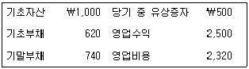
- ￦1,060
- ￦1,200
- ￦1,300
- ￦1,700
- ￦1,800
(정답률: 알수없음)
60. 회계정책, 회계추정의 변경 및 오류에 관한 설명으로 옳은 것은?
- 측정기준의 변경은 회계정책의 변경이 아니라 회계추정의 변경에 해당한다.
- 회계추정의 변경효과를 전진적으로 인식하는 것은 추정의 변경을 그것이 발생한 시점 이후부터 거래, 기타 사건 및 상황에 적용하는 것을 말한다.
- 과거에 발생한 거래와 실질이 다른 거래, 기타 사건 또는 상황에 대하여 다른 회계정책을 적용하는 경우에도 회계정책의 변경에 해당한다.
- 과거기간의 금액을 수정하는 경우 과거기간에 인식, 측정, 공시된 금액을 추정함에 있어 사후에 인지된 사실을 이용할 수 있다.
- 회계정책의 변경과 회계추정의 변경을 구분하는 것이 어려운 경우에는 이를 회계정책의 변경으로 본다.
(정답률: 알수없음)
61. 유용한 재무정보의 질적 특성에 관한 설명으로 옳지 않은 것은?
- 재무정보가 유용하기 위해서는 목적적합해야 하고 나타내고자 하는 바를 충실하게 표현해야 한다.
- 보강적 질적 특성을 적용하는 것은 어떤 규정된 순서를 따르지 않는 반복적인 과정이므로 때로는 하나의 보강적 질적 특성이 다른 질적 특성의 극대화를 위해 감소되어야 할 수도 있다.
- 회계기준위원회는 중요성에 대한 획일적인 계량 임계치를 정하거나 특정한 상황에서 무엇이 중요한 것인지를 미리 결정할 수 있다.
- 중요성은 개별 기업 재무보고서 관점에서 해당 정보와 관련된 항목의 성격이나 규모 또는 이 둘 모두에 근거하여 해당 기업에 특유한 측면의 목적적합성을 의미한다.
- 근본적 질적 특성을 충족하면 어느 정도의 비교가능성은 달성될 수 있을 것이다.
(정답률: 알수없음)
62. (주)감평은 20x1년 1월 1일에 공장건물을 신축하여 20x2년 9월 30일에 완공하였다. 공장건물 신축 관련 자료가 다음과 같을 때, (주)감평이 20x1년도에 자본화할 차입원가는?
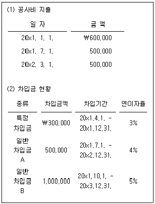
- ￦29,250
- ￦31,500
- ￦34,875
- ￦37,125
- ￦40,125
(정답률: 알수없음)
63. (주)감평은 20x1년 1월 1일에 사채를 발행하여 매년 말 액면이자를 지급하고 유효이자율법에 의하여 상각한다. 20x2년 말 이자와 관련된 회계처리는 다음과 같다.
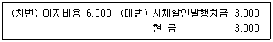
위 거래가 반영된 20x2년 말 사채의 장부금액이 ￦43,000으로 표시되었다면, 사채의 유효이자율은? (단, 사채의 만기는 20x3년 12월 31일이다.)
- 연 11%
- 연 12%
- 연 13%
- 연 14%
- 연 15%
(정답률: 알수없음)
64. (주)감평은 20x1년 1월 1일에 다음 조건의 전환사채를 발행하였다.
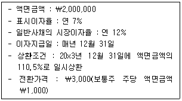
만일 위 전환사채에 상환할증금 지급조건이 없었다면, 상환할증금 지급조건이 있는 경우에 비해 포괄손익계산서에 표시되는 20x1년 이자비용은 얼마나 감소하는가? (단, 현재가치는 다음과 같으며 계산결과는 가장 근사치를 선택한다.)
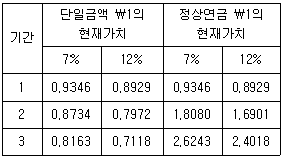
- ￦17,938
- ￦10,320
- ￦21,215
- ￦23,457
- ￦211,182
(정답률: 알수없음)
65. (주)감평은 20x1년 1월 1일에 (주)민국을 흡수합병하였다. 합병시점에 (주)감평과 (주)민국의 식별가능한 자산과 부채의 장부금액 및 공정가치는 다음과 같다. (주)감평이 합병대가로 보통주(액면금액 ￦3,000, 공정가치 ￦3,500)를 (주)민국에 발행교부하였을 경우, 영업권으로 인식할 금액은?
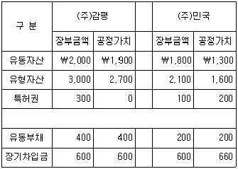
- ￦760
- ￦960
- ￦1,260
- ￦1,360
- ￦1,460
(정답률: 알수없음)
66. (주)감평의 20x1년 재고자산 관련 자료는 다음과 같다. 재고자산 가격결정 방법으로 선입선출-소매재고법을 적용할 경우 기말재고액(원가)은? (단, 단수차이는 가장 근사치를 선택한다.)
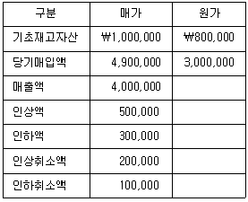
- ￦1,125,806
- ￦1,153,846
- ￦1,200,000
- ￦1,266,667
- ￦1,288,136
(정답률: 알수없음)
67. (주)감평은 20x1년 1월 1일에 건물을 ￦5,000,000에 취득(내용연수 10년, 잔존가치 ￦0, 정액법 감가상각)하였다. 20x1년 말 및 20x2년 말 기준 원가모형을 적용하는 건물의 순공정가치는 각각 ￦3,600,000과 ￦3,900,000이고, 사용가치는 각각 ￦3,000,000과 ￦4,300,000이다. (주)감평은 건물의 회수가능액과 장부금액의 차이가 중요하고 손상징후가 있는 것으로 판단하여 손상차손(손상차손환입)을 인식하였다. 관련 설명으로 옳지 않은 것은?
- 20x2년도에 감가상각비로 ￦400,000을 인식한다.
- 20x1년 말 재무상태표에 표시되는 건물 장부금액은 ￦3,600,000이다.
- 20x2년 말 재무상태표에 표시되는 건물 장부금액은 ￦4,000,000이다.
- 20x1년도에 손상차손으로 ￦900,000을 인식한다.
- 20x2년도에 손상차손환입으로 ￦1,100,000을 인식한다.
(정답률: 알수없음)
68. (주)감평의 20x1년 초 상품재고는 ￦30,000이며, 당기매출액과 당기상품매입액은 각각 ￦100,000과 ￦84,000이다. (주)감평의 원가에 대한 이익률이 25%인 경우, 20x1년 재고자산회전율은? (단, 재고자산회전율 계산시 평균상품재고와 매출원가를 사용한다.)
- 0.4회
- 1.5회
- 2.0회
- 2.5회
- 3.0회
(정답률: 알수없음)
69. (주)감평은 20x1년 초에 1주당 액면금액 ￦5,000인 보통주 140주를 액면발행하여 설립하였으며, 20x1년 말 이익잉여금이 ￦300,000이었다. 20x2년 중 발생한 자기주식 관련 거래는 다음과 같으며 그 외 거래는 없다. (주)감평은 소각하는 자기주식의 원가를 선입선출법으로 측정하고 있다. 20x2년 말 자본총계는?
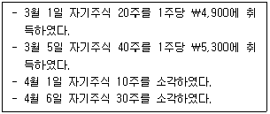
- ￦390,000
- ￦690,000
- ￦790,000
- ￦840,000
- ￦966,000
(정답률: 알수없음)
70. 충당부채와 우발부채에 관한 설명으로 옳지 않은 것은?
- 제3자와 연대하여 의무를 지는 경우에는 이행할 전체의무 중 제3자가 이행할 것으로 예상되는 부분을 우발부채로 인식한다.
- 충당부채로 인식되기 위해서는 과거사건의 결과로 현재의무가 존재하여야 한다.
- 충당부채를 현재가치로 평가할 때 할인율은 부채의 특유한 위험과 화폐의 시간가치에 대한 현행 시장의 평가를 반영한 세전 이율을 적용한다.
- 충당부채와 관련하여 포괄손익계산서에 인식한 비용은 제3자의 변제와 관련하여 인식한 금액과 상계하여 표시할 수 있다.
- 과거에 우발부채로 처리하였다면 이후 충당부채의 인식조건을 충족하더라도 재무제표의 신뢰성 제고를 위해서 충당부채로 인식하지 않는다.
(정답률: 알수없음)
71. (주)대한은 제1공정에서 주산물 A, B와 부산물 C를 생산한다. 주산물 A와 부산물 C는 즉시 판매될 수 있으나, 주산물 B는 제2공정에서 추가가공을 거쳐 판매된다. 20x1년에 제1공정과 제2공정에서 발생된 제조원가는 각각 ￦150,000과 ￦60,000이었고, 제품별 최종 판매가치 및 판매비는 다음과 같다.
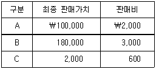
(주)대한은 주산물의 매출총이익률이 모두 동일하게 되도록 제조원가를 배부하며, 부산물은 판매시점에 최초로 인식한다. 주산물 A의 총제조원가는? (단, 기초 및 기말 재고자산은 없다.)
- ￦74,500
- ￦75,000
- ￦76,000
- ￦77,500
- ￦78,000
(정답률: 알수없음)
72. 표준원가계산제도를 채택하고 있는 (주)대한의 20x1년도 직접노무원가와 관련된 자료는 다음과 같다. 20x1년도의 실제생산량은?
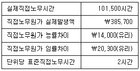
- 51,000단위
- 51,500단위
- 52,000단위
- 52,500단위
- 53,000단위
(정답률: 알수없음)
73. 다음은 (주)대한의 20x1년도 예산자료이다.
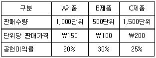
연간 고정원가 총액은 ￦156,000이다. (주)대한의 20x1년도 예상 매출액이 ￦700,000이라면, 회사전체의 예상 영업이익은? (단, 매출배합은 불변)
- ￦10,000
- ￦10,400
- ￦11,200
- ￦12,000
- ￦12,400
(정답률: 알수없음)
74. (주)대한은 펌프사업부와 밸브사업부를 이익중심점으로 운영하고 있다. 밸브사업부는 X제품을 생산하며, X제품의 단위당 판매가격과 단위당 변동원가는 각각 ￦100과 ￦40이고, 단위당 고정원가는 ￦20이다. 펌프사업부는 연초에 Y제품을 개발했으며, Y제품을 생산하는데 필요한 A부품은 외부업체로부터 단위당 ￦70에 구입할 수 있다. 펌프사업부는 A부품 500단위를 밸브사업부로부터 대체받는 것을 고려하고 있다. 밸브사업부가 A부품 500단위를 생산 및 대체하기 위해서는 단위당 변동제조원가 ￦30과 단위당 운송비 ￦7이 발생하며, 기존 시장에서 X제품의 판매량을 200단위만큼 감소시켜야 한다. 밸브사업부가 대체거래를 수락할 수 있는 A부품의 단위당 최소 대체가격은?
- ￦53
- ￦58
- ￦61
- ￦65
- ￦70
(정답률: 알수없음)
75. (주)대한은 X, Y, Z 제품을 생산ㆍ판매하고 있으며, 20x1년도 제품별 예산손익계산서는 다음과 같다.
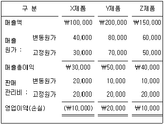
(주)대한의 경영자는 영업손실을 초래하고 있는 X제품의 생산을 중단하려고 한다. X제품의 생산을 중단하면, X제품의 변동원가를 절감하고, 매출원가에 포함된 고정원가의 40%와 판매관리비에 포함된 고정원가의 60%를 회피할 수 있다. 또한, 생산중단에 따른 여유생산능력을 임대하여 ￦10,000의 임대수익을 얻을 수 있다. X제품의 생산을 중단할 경우, 20x1년도 회사 전체의 예산영업이익은 얼마나 증가(또는 감소)하는가? (단, 기초 및 기말 재고자산은 없다.)
- ￦4,000 감소
- ￦5,000 증가
- ￦6,000 감소
- ￦7,000 증가
- ￦8,000 증가
(정답률: 알수없음)
76. (주)감평의 최근 6개월간 A제품 생산량 및 총원가 자료이다.
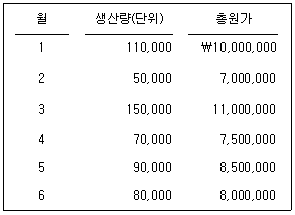
원가추정은 고저점법(high-low method)을 이용한다. 7월에 A제품 100,000단위를 생산하여 75,000단위를 단위당 ￦100에 판매할 경우, 7월의 전부원가 계산에 의한 추정 영업이익은? (단, 7월에 A제품의 기말제품 이외에는 재고자산이 없다.)
- ￦362,500
- ￦416,000
- ￦560,000
- ￦652,500
- ￦750,000
(정답률: 알수없음)
77. (주)감평은 선입선출법에 의한 종합원가계산을 채택하고 있다. 전환원가(가공원가)는 공정 전반에 걸쳐 균등하게 발생한다. 다음 자료를 활용할 때, 기말재공품원가에 포함된 전환원가(가공원가)는? (단, 공손 및 감손은 발생하지 않는다.)
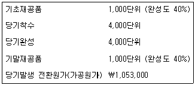
- ￦98,000
- ￦100,300
- ￦102,700
- ￦1⑤,300
- ￦115,500
(정답률: 알수없음)
78. (주)감평은 매입원가의 130%로 매출액을 책정한다. 모든 매입은 외상거래이다. 외상매입액 중 30%는 구매한 달에, 70%는 구매한 달의 다음 달에 현금으로 지급된다. (주)감평은 매월 말에 다음 달 예상 판매량의 25%를 안전재고로 보유한다. 20x1년도 예산자료 중 4월, 5월, 6월의 예상 매출액은 다음과 같다.
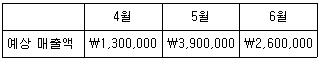
20x1년 5월에 매입대금 지급으로 인한 예상 현금지출액은? (단, 4월, 5월, 6월의 판매단가 및 매입단가는 불변)
- ￦1,750,000
- ￦1,875,000
- ￦2,⑤0,000
- ￦2,255,000
- ￦2,500,000
(정답률: 알수없음)
79. (주)감평은 A제품을 생산ㆍ판매하고 있다. 20x1년에는 기존고객에게 9,000단위를 판매할 것으로 예상되며, A제품 관련 자료는 다음과 같다.
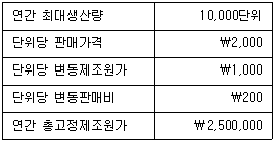
20x1년 중에 (주)감평은 새로운 고객인 (주)대한으로부터 A제품 2,000단위를 구매하겠다는 특별주문을 제안 받았다. 특별주문을 수락하면 기존고객에 대한 판매량 중 1,000단위를 감소시켜야 하며, 특별주문에 대해서는 단위당 변동판매비 ￦200이 발생하지 않는다. (주)감평이 특별주문으로부터 받아야 할 단위당 최소판매가격은? (단, 특별주문은 일부분만 수락할 수 없음)
- ￦1,300
- ￦1,350
- ￦1,400
- ￦1,450
- ￦1,500
(정답률: 알수없음)
80. (주)감평은 20x1년 1월 1일에 설립된 회사이다. 20x1년도 1월 및 2월의 원가자료는 다음과 같다.
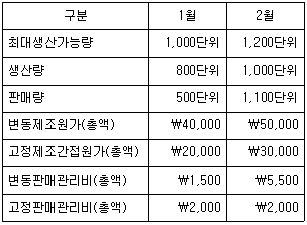
(주)감평은 실제원가계산을 적용하고 있으며, 원가흐름가정은 선입선출법이다. 20x1년 2월의 전부원가계산에 의한 영업이익이 ￦10,000이면, 2월의 변동원가 계산에 의한 영업이익은? (단, 기초 및 기말 재공품재고는 없다.)
- ￦10,500
- ￦11,000
- ￦11,500
- ￦12,000
- ￦12,500
(정답률: 알수없음)